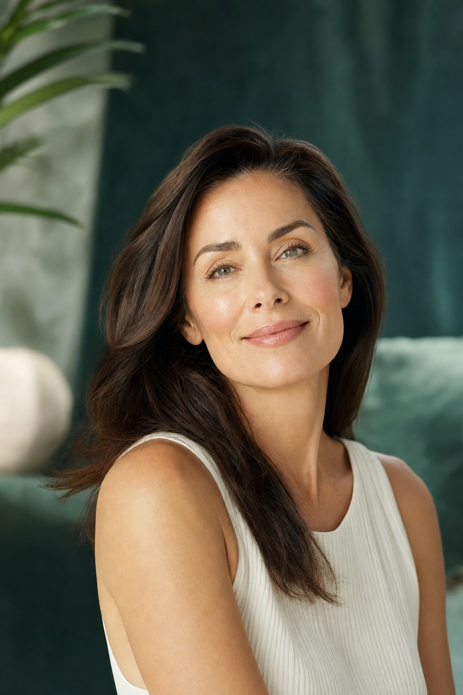

Нормализация веса
Стройность без голода и срывов. Активно применяю пептиды для снижения веса под моим контролем.
Помогаю женщинам похудеть без срывов и диет, вернуть энергию и сияющую, красивую внешность. Большой практический опыт в нутрициологии и пептидной терапии с доказанной эффективностью - работаю по вашим анализам и веду на каждом этапе.
Онлайн, без оплаты. Разберем ваш запрос и наметим план.


Интегративный и клинический нутрициолог, 7 лет практики и более 800 клиентов. Помогаю женщинам выстроить питание и образ жизни так, чтобы тело работало на них: без жестких диет, на данных и в удовольствие. Специализируюсь на весе, гормонах, ЖКТ, anti-age и работе с пептидами.


Диеты не работают вдолгую, анализы «в норме», а самочувствие - нет. Я ищу первопричину и убираю ее, а не маскирую симптом.
Похудение, пищеварение, гормоны, anti-age и активное долголетие. Активно применяю в работе пептиды с доказанной эффективностью - индивидуально по вашим анализам и под контролем эксперта.


Интегративный подход соединяет данные анализов, ваши симптомы и образ жизни. Так мы находим настоящую причину и работаем точечно.

Разбираем жалобы, анамнез, анализы и привычки. Формулируем реальную цель.
Находим корень: дефициты, гормоны, ЖКТ, обмен веществ - а не только симптом.
Питание, микронутриенты и нутрицевтики. При необходимости - работа с пептидами.
Ведем до результата, корректируем план и закрепляем привычки.
Пептиды - один из моих ключевых инструментов, и я активно применяю их в практике. Одни помогают снизить вес и аппетит, другие работают на кожу, энергию и активное долголетие. Подбираю схему строго индивидуально - по вашим анализам, целям и состоянию, с доказательным подходом и контролем на каждом этапе.
Контроль аппетита и тяги, стабильный сахар и устойчивое снижение веса без жестких диет и качелей.
Упругость и сияние кожи, меньше морщин, больше энергии и ресурс для активного долголетия.
Пептиды дают результат только в грамотной схеме. Самолечение рискованно - со мной вы получаете доказательный подбор, точные дозировки и сопровождение до цели.

Начинаем с бесплатного знакомства. Дальше вы сами решаете, идти ли в глубокую работу.

Онлайн по видеосвязи. Знакомимся, вы рассказываете о запросе и самочувствии, я задаю уточняющие вопросы, ставлю фокус и объясняю простым языком, как именно можно решить вашу задачу и с чего стоит начать.

Глубокая встреча. Разбираю ваши анализы и симптомы, связываю их в общую картину и составляю индивидуальный протокол питания и нутрицевтиков под вашу цель. Вы уходите с понятным пошаговым планом, а не с общими советами.

Веду вас до цели: мы на связи между встречами, я отвечаю на вопросы, корректирую план по вашей динамике и самочувствию и помогаю закрепить привычки, чтобы результат остался с вами надолго.
Реальные истории тех, кто перестал бороться с симптомами и убрал причину.
«За два месяца ушли 6 кг без жестких ограничений, а главное - вернулась энергия. Наталия объясняет каждый шаг простым языком».
«Разобрались со щитовидкой и циклом. Впервые вижу системный подход по анализам, а не общие советы из интернета».
«Прошла сопровождение с пептидами под контролем Наталии. Все четко, безопасно и с результатом. Рекомендую».
«Забыла про вздутие и тяжесть после еды. Наладили питание, и живот наконец спокойный весь день».
«Ушла постоянная усталость и туман в голове. Утром просыпаюсь бодрая, чего не было уже несколько лет».
«Думала, после 45 вес уже не сдвинуть. Сдвинули, и он держится. Спасибо за терпение и поддержку».
«Готовились к беременности: привели в порядок дефициты и цикл. Наталия всегда на связи и все поясняет».
«Кожа, сон, настроение - все подтянулось. Это не диета, а образ жизни, который реально нравится».
«Кожа стала плотнее, мелкие морщинки сгладились, лицо будто отдохнуло. Пептиды и уход подобрали под мое состояние».
«Снижала вес на семаглутиде строго под контролем Наталии - без побочек и качелей. Минус 11 кг, и вес держится».
«Пептиды для энергии и питание вернули силы: к вечеру больше нет упадка, а выгляжу заметно свежее».
Снижение веса и anti-age: не только минус на весах, но и кожа, энергия, здоровье и уверенность в себе.
 ДоПосле
ДоПосле«Аппетит под контролем, перестала заедать стресс».
 ДоПосле
ДоПосле«Минус 17 кг без жестких диет и изнурительного спорта».
 ДоПосле
ДоПосле«Снова влезла в любимые джинсы спустя пять лет».
 ДоПосле
ДоПосле«Стало больше энергии, нормализовался сахар».
 ДоПосле
ДоПосле«Ушли тяжесть и отеки, а вес уверенно держится».
 ДоПосле
ДоПосле«Лицо посвежело, мелкие морщинки почти ушли».
 ДоПосле
ДоПосле«Кожа стала плотнее и сияет, выгляжу отдохнувшей».
 ДоПосле
ДоПосле«Ушла тусклость и высыпания, кожа гладкая и ровная».
Оставьте заявку - я свяжусь с вами, отвечу на вопросы и мы подберем удобное время. Бесплатно, без спама и давления.